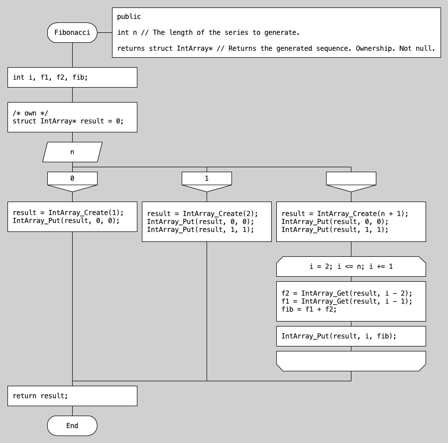

DRAKON
DRAKON est un langage algorithmique de programmation visuelle.
Histoire de la création du langage algorithmique DRAKON
Pourquoi j'ai choisi le langage algorithmique DRAKON
Méthodologie de la recherche sur DRAKON
Les avantages et les inconvénients du DRAKON
Définition du langage algorithmique DRAKON

DRAKON est un langage algorithmique de programmation visuelle.
Le nom DRAKON est une abréviation en russe. Son signification est suivante :
D [Druzhelyubnyï] - Amical,
R [Russkyï] - Russe,
A [Algoritmicheskiï yazyk] - Langage algorithmique,
K [Kotoryï] – Qui,
O [Obespechivaet] - Fournit,
N [Naglyadnost] - Une Démonstrabilité
En Français cette abréviation aurait pu être présenter de la façon suivante –
ALARFD : Amical langage algorithmique russe, qui fournit une démonstrabilité.
DRAKON n'est pas un simple langage mais une famille de langages hybrides, tel que DRAKON-C, DRAKON-Java, etc. Tous les langages hybrides de la famille drakon ont une syntaxe graphique uniforme et ne diffèrent qu'au niveau textuel.
Le langage est construit grâce à la formalisation et l'ergonomie des organigrammes d'algorithmes. Il est conçu pour créer des programmes qui pourraient être vus comme des modèles contenant du code dans un langage texte. DRAKON peut être utilisé pour développer des programmes en temps réel.
Histoire de la création du langage algorithmique DRAKON
Le développement de DRAKON a commencé en 1986. Il était dirigé par Vladimir Parondzhanov avec la participation de l'Agence Aérospatiale Fédérale de Russie et l'Académie des Sciences de Russie. Le langage a été construit pour une formalisation et structuration des diagrammes de flux décrits par le standard ISO 5807-85 et le standard russe «Гост 19.701-90». En effet, il devait assurer le développement de programmes en temps réel.
Il était développé dans le cadre du programme de vaisseau spatial réutilisable soviétique Bourane.
Le langage algorithmique de DRAKON a été développé suit au facteur humain. En effet, son objectif était d'éliminer les malentendus entre ingénieurs et programmeurs. Avec le DRAKON, les ingénieurs pouvaient créer leurs propres algorithmes, sans savoir programmer. A leur tour, les développeurs transformaient les algorithmes des ingénieurs en code de programmation.
Ce système de conception assistée est utilisé depuis 1996 pour de nombreux grands programmes spatiaux. Parmi eux sont le projet international Sea Launch, insertion orbitale de l'étage supérieur de la Fregat, développement du lancement de véhicule lourd Proton-M.
Pourquoi j'ai choisi le langage algorithmique DRAKON
Mon ami ukrainien a une entreprise de développement et de construction de machines, fabricant des panneaux solaires.
Il m’a proposé de prendre connaissance du développement des contrôleurs et des autres robotiques diverses, pour ses machines. Son objectif est d’avoir des machines, qui gèrent le processus de la fabrication des panneaux solaires et contrôlent la qualité. J’ai cherché alors un langage, qui va répondre à ces besoins. Le DRAKON me semblerait une solution idéale, puisque qu’il est simple dans l’utilisation, fiable et compréhensible pour l’ensemble de l’équipe. C’est pourquoi j’ai commencé à apprendre le langage algorithmique DRAKON.

Méthodologie de la recherche sur DRAKON
Un jour j’ai regardé un cours en ligne sur la programmation orientée objet. L’auteur de la vidéo a donné un exemple de la langue algorithmique DRAKON, pour une de ces explications.
Alors, je me suis intéressé à la langue DRAKON. En utilisant le moteur de recherche Google, j’ai trouvé un article sur Wikipédia. Ensuite, je me suis dirigé vers le site officiel de la langue algorithmique DRAKON. J’ai lu la documentation officielle. Ensuite, j’ai commencé à apprendre les organigrammes de programmation et la logique des algorithmes en langue DRAKON.
Egalement, j’ai trouvé un peu d’information sur Youtube et sur les autres sites web.
Les avantages et les inconvénients du DRAKON
Les avantages
- Les capacités du langage DRAKON peuvent être étendues en fonction des besoins de l'utilisateur.
- En gros, le système d'information DRAKON peut prendre en charge la fonctionnalité et la syntaxe d’autres langues algorithmiques. Autrement dit, n’importe quelle personne peut facilement apprendre certaines fonctionnalités du DRACON, pour créer un ordre algorithmique nécessaire. Ensuite, le développeur « traduit » cette ordre algorithmique en une autre langue de programmation, prise en charge par DRACON.
- L'ergonomie. Si un logiciel était écrit durant une longue période ou collectivement, le DRACON permet de gérer son évolution. En effet, grâce au DRAKON chaque participant peut s’occuper de sa propre tâche, ce qui facilite et accélère l’avancement du projet.
- Algorithmes de la langue DRAKON sont facilement compréhensibles. N’importe quel ingénieur peut le lire et comprendre. C’est pourquoi les erreurs ne sont pas fréquentes dans cette langue. Par conséquences c’est une langue idéale pour le secteur industriel, où chaque erreur coûte très cher.
Les inconvénients
- Premièrement, le DRAKON ne convient pas pour des longs codes, parce qu’ils deviennent trop volumineux. Des longs codes seront plus faciles à analyser, s’ils sont écrits en autres langues
- Deuxièmement, il n’est pas facile de trouver une réponse pour une question ou une difficulté, liés au DRAKON. En effet, les développeurs, la communauté des passionnés et la documentation officielle existent, mais ils ne sont pas nombreux.
- Finalement, la langue russe présente une difficulté dans l’utilisation de DRAKON. Bien sûr, que ce n’est pas parce que la langue russe est mauvaise. En effet, cette langue est très belle. En plus, les organigrammes de programmation peuvent être écrites en n’importe quelles langues. Par contre, les 80% de la documentation officielle est en russe. Enfin, la plupart de développeur russes ne parlent pas anglais.
Conclusion. Quelles sont les perspectives de DRAKON au 21ème siècle et dans quels domaines d'application
DRAKON est une langue algorithmique, qui se présente en les organigrammes de programmation. Elle est facile en compréhension et la risque d’une erreur est minimale. C’est pourquoi je trouve qu’elle convient parfaitement pour la robotique et des autres équipement industriel. Dans ce secteur la haute précision du DRAKON permettrait de réduire les dépenses du développement et des erreurs. De même, la haute précision permettrait de préserver les vies humaines et les rejets industriels, nuisible pour l’écologie.
Egalement, DRAKON peut être appliqué dans le secteur médical : pour l’amélioration des technologies d’urgences, de travail d’équipe et d’autres opérations complexes.
Pour conséquence, le DRAKON doit être appliqué dans les secteurs où la rapidité et la qualité d’écriture du code sont primordiales. Les erreurs de la programmation peuvent être tolérées dans les programmes de divertissement ou de créations. Mais dans les secteurs, qui sont liés directement avec les vies humaines et l’écologie, nécessitent de la haute précision. C’est pourquoi le DRAKON est incontournable pour les ingénieurs et les spécialistes du secteur industriel.